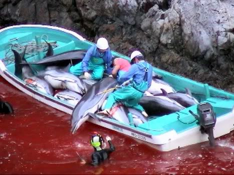

This week I watched a 2009 documentary film named 「The Cove」 which analyzes and questions dolphin hunting in Japan Taiji.
It was awarded the 2010 Oscar for Best Documentary Feature in 2010.
Some brave people from Sea Shepherd etc tried hard to create this film cause this fact is quite sensitive and probably injurious to some fishermen’s interest.
They even used sensationalized techniques - including hidden cameras to tell us this problem.
Dolphin hunting takes place elsewhere in Japan but Taiji is the only place where “drive” hunting occurs.
This involves forcing dolphins into the now infamous cove, where they are then penned in by long nets.
The dolphins are then either sold on to aquariums to become performing exhibits or butchered for meat..
Some cruel scenes make me feel quite uncomfortable, especially when fishermen even try to kill baby dolphin. The dolphin’s blood stained the water red.

Tbh I don’t like killing animal in this ruthless way and do we have the moral right to kill animals in this way?
Thanks to「The Cove」, it was a well-told story which tell us some truth was coverd for a long time though it was one-sided in some way.
As far as I see, Japan continue to do dolphin hunting just because of profit and tradition.
Even though consumption of dolphin meat has been declining steadily in Japan, to the point where many young people in Tokyo have never eaten it.
Tradition in Japan is something that is just handed down, whether it’s good or bad, whether it fits today’s world or not.
Maybe this is also a thing should be considered by Japanese under the this topic.